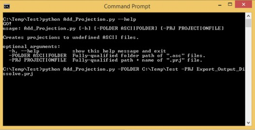

D.6 | Add Georeferenced Projection Information to VELMA Output ASCII Maps
Overview (Tutorial D.6 - Add Georeferenced Projection Info to VELMA Output ASCII Maps)
This document describes how to add georeferenced projection information to VELMA's spatial output files so that the outputs can be correctly displayed in space with reference to other geospatial data.
Very important when using ArcGIS, VISTAS or other visualization software to compare VELMA outputs with other geospatial data.
Note: Instructions for creating VELMA spatial output files can be found in section "23.0 - Spatial Data Items" in the VELMA 2.0 User Manual (https://www.epa.gov/water-research/visualizing- ecosystem-land-management-assessments-velma-model-20).
VELMA output maps are by default produced without adjoining projection files. This script will create the corresponding projection information for each output map so that the user can properly geolocate the ASCII maps in a GIS software, such as ArcGIS or QGIS. The user will have to create or provide a single projection file from which all other maps will be referenced to.
Software Requirements and Processing
To run and produce the adjoining projection files for a set of VELMA ASCII map outputs you will need the following:
- Python version 2.x: Current release is 2.7.12
- Python comes pre-packaged within ArcGIS and QGIS, so it is likely you already have it installed on your computer. For example, a default install is currently here: C:\Python27\ArcGIS10.2\python.exe. Check to see if you have Python installed before installing a new version. If Python is not installed, you can obtain a copy here: https://www.python.org/download/releases/2.7/ Note that Python 2.7 is currently considered safe for use on U.S. EPA network and non-network computers.
- ASCII Maps requirements: VELMA ASCII raster outputs.
- A single projection (.prj) file that matches the projection of raster outputs.
- "Add_Projection.py" and can be run with Command Prompt line with Python. Command prompt input example:
"python Add_Projection.py -FOLDER C:\Temp\Test -PRJ mypojectionFile.prj""python Add_Projection.py --help" for exact arguments (Figure 1).Figure 1. Command line example of running the projection adding script.
Scripts
# Add_Projection.py # Author: Paul Pettus # Date: 5-1-2017
# Description: Adds projections to raw ASCII VELMA file outputs #
# VELMA Output files are created without projection. This script creates # projections for those output files from a single projection file.
#
# Last updated: 5-2-2017 import os, sys, argparse
# Error message class class Usage(Exception):
def __init__(self, msg):
self.msg = msg def main(argv=None):
if argv is None:
argv = sys.argv
try:
print("GO!")
parser = argparse.ArgumentParser(description='Creates projections to undefined ASCII files.'
)
parser.add_argument('-FOLDER', dest='asciiFolder', help='Fully-qualified folder path of ".asc" files.')
parser.add_argument('-PRJ', dest='projectionFile', help='Fully-qualified path + name of ".prj" file.')
args = parser.parse_args() # args parsing
prjFile = os.path.abspath(args.projectionFile)
inFolder = os.path.abspath(args.asciiFolder) print (prjFile)
print (inFolder)
# do the work addProjections(prjFile, inFolder)
except Usage as e:
print(e.msg) return 2
except Exception as e:
# STUB exception handler
# Warning: poor programming style.
# Catches almost any exception (but not KeyboardInterrupt -- which is a Good Thing) raise e
def addProjections(prjFile, inFolder):
# Check that projection file exists if not os.path.exists(prjFile):
raise Usage('Cannot find projection file "' + prjFile + '"')
# Check that ASCII folder exists if not os.path.exists(inFolder):
raise Usage('Cannot find folder "' + inFolder + '"') print ("Starting projection definitions.")
# read in projection file text prjF = open(prjFile,'r') prjText = prjF.readlines() prjF.close()
# read in ASCII files asciiList = []
for files in os.listdir(inFolder):
if files.endswith(".asc"):
print(files) asciiList.append(files)
# Loop through files and create new projections for files in asciiList:
fileName, fileExtension = os.path.splitext(files) outFile = fileName + ".prj"
print(outFile)
f = open(outFile, "w") for item in prjText:
f.write(item) f.close()
print("Done!")
if __name__== "__main__": sys.exit(main())